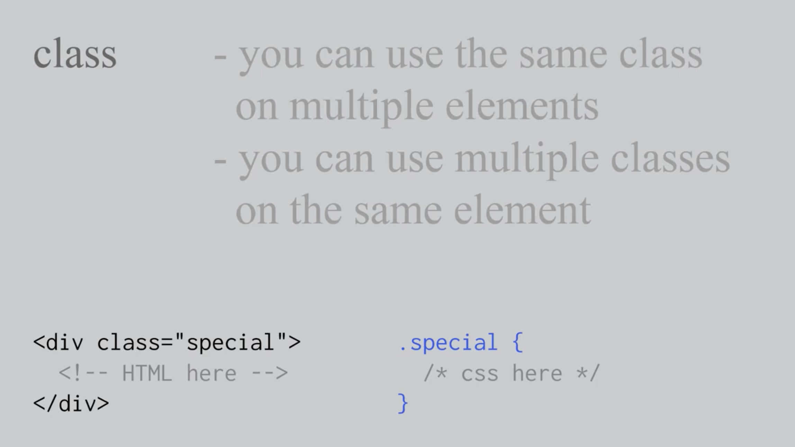
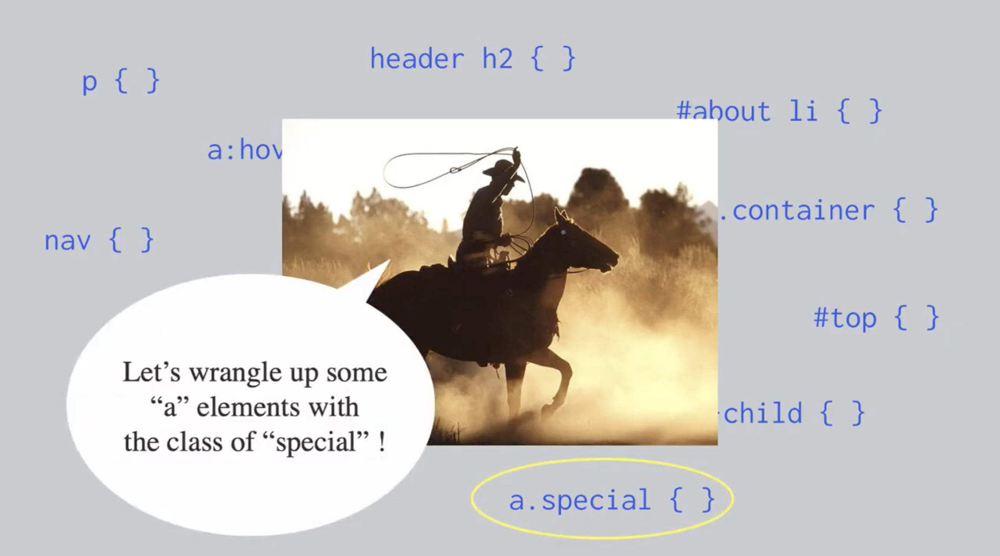

Crafting an Aesthetic, CSS, and Speculation
html is like building the frame and foundation of a house
css is like painting and decorating each room of your home
if the internet was a living environment, what do you want it to look like?
Classes and ID's
Go to this page
Selectors

CSS Article Exercise
Part 1 - HTML
Choose and Interview or Article here ideally one with multiple levels of hierarchy and images.
Translate this article into HTMl. Focus on hierarchy and using the most specific elements to organize content. If the article did not originally have images, add a few relevant images throughout.
Include
- Prelude and artist photo
- Interviewer/author name and date of publishing
- Article
Part 2 - CSS
Add CSS styling to the article. Focus on improving clarity, organization, and hierarchy.
Homework: Style your Homepage
Add anymore styling to your "Welcome to my Homepage". Maybe create some content that says something about yourself as a designer. Maybe its some creative work you want to incorporate, maybe it's some fun drawings.Anything you would like to have as a welcoming centerpiece of your site.